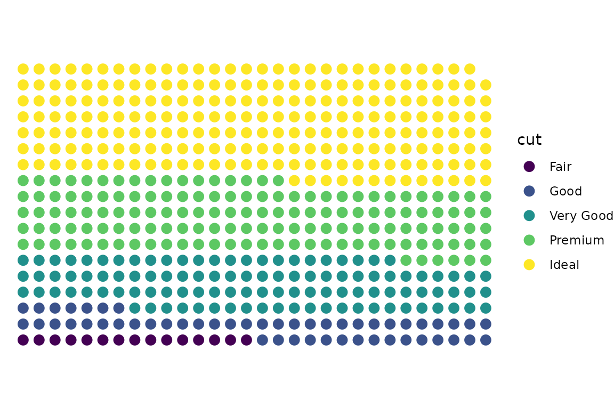
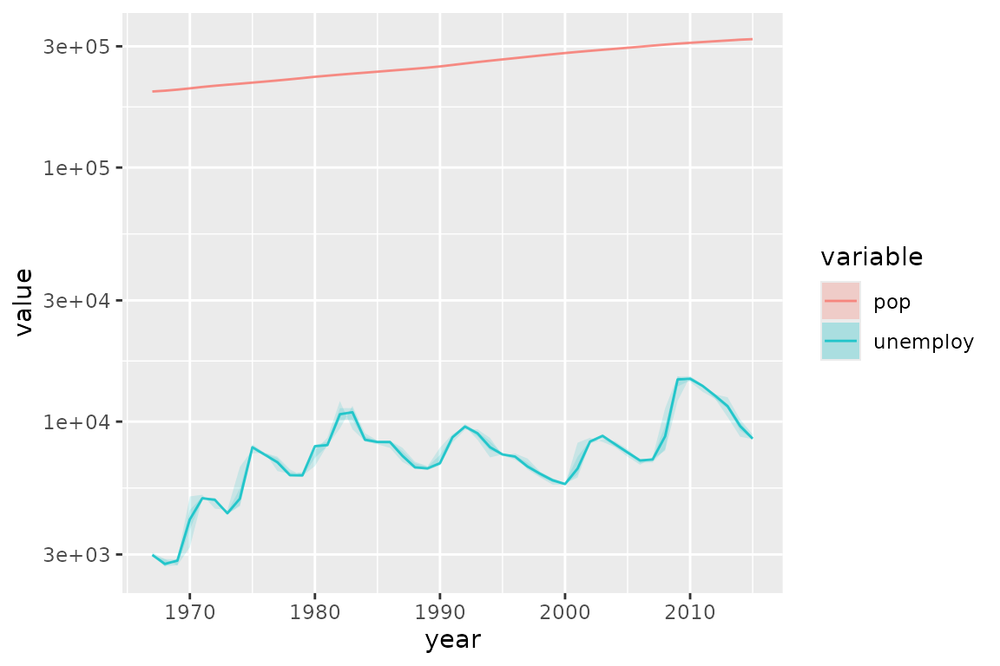

Miscellaneous Examples
Doug Kelkhoff
2022-07-14 17:35:39
miscellaneous-examples.Rmd##
## Attaching package: 'dplyr'## The following objects are masked from 'package:stats':
##
## filter, lag## The following objects are masked from 'package:base':
##
## intersect, setdiff, setequal, unionDot Matrix Plots
ggpk_dot_matrix <- function(..., width = 10) {
ggpacket(...) %+%
geom_point(
data = . %>% mutate(
xvar = (1:nrow(.)-1) %% width,
yvar = (1:nrow(.)-1) %/% width),
mapping = aes(x = xvar, y = yvar),
...) %+%
theme_void() %+%
coord_fixed()
}
diamonds %>%
sample_frac(0.01) %>%
arrange(cut) %>%
ggplot() +
aes(color = cut) +
ggpk_dot_matrix(size = 3, width = 30)
Tukey Ribbons
ggpk_tukey_ribbons <- function(...) {
ggpacket(...) %+%
# Tukey Box Edges
geom_ribbon(.id = "box",
mapping = aes(fill = ..color..),
stat = 'summary',
fun = median,
fun.min = ~quantile(., 0.25, names = FALSE),
fun.max = ~quantile(., 0.75, names = FALSE),
alpha = 0.15,
...,
color = NA) %+%
# Tukey Whiskers
geom_ribbon(.id = "whisker",
mapping = aes(fill = ..color..),
stat = 'summary',
fun = median,
fun.min = ~.[head(which(. > quantile(., 0.25, names = FALSE) - 1.5 * IQR(.)), 1)],
fun.max = ~.[tail(which(. < quantile(., 0.75, names = FALSE) + 1.5 * IQR(.)), 1)],
alpha = 0.15,
...,
color = NA) %+%
# Median Line
geom_line(.id = list(NULL, 'line'),
stat = 'summary',
fun = median,
alpha = 0.8,
...)
}
economics_long %>%
filter(variable %in% c('pop', 'unemploy')) %>%
mutate(year = as.integer(format(as.Date(date, format="%Y-%m-%d"),"%Y"))) %>%
ggplot() + aes(x = year, y = value, color = variable) +
ggpk_tukey_ribbons() +
scale_y_log10()